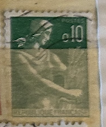
| SOURCE | TITLE| IMAGE MATCH | click to source page |
| Bed Bath & Beyond | French postage stamp" Black Float Frame Canvas Art - Bed Bath & Beyond - 25503497 | 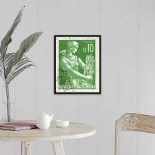 |
| eBay | Germany Famous playwright Bertold Brecht stamp 1960 A-2 | eBay | 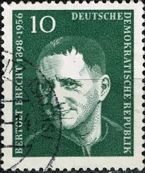 |
| eBay | 1936 King Edward VIII Definitves Stamps SG 457 - SG 460 {Multi-Listing} MNH | eBay | 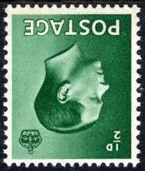 |
| Poppe Stamps | Poppe Stamps: German Federal Republic, 1954, 1109, Presidents - stamps for sale by theme and country | 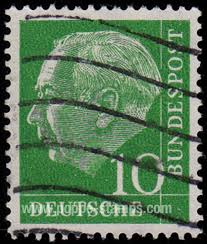 |
| eBay | ÉTAT ALGÉRIEN - SÉTIF - SURCHARGE EA typographique NOIRE - 0,10Fr MOISSONNEUSE | eBay | 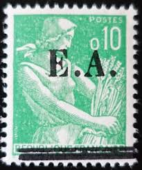 |
| BB Stamps | King Edward 8 Sets As Concise – Great British Stamps 1840 to DATE. Mint & Used GB Stamps | 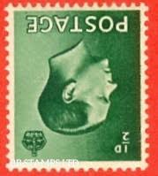 |
| Dreamstime.com | Konstantin Päts Stock Photos - Free & Royalty-Free Stock Photos from Dreamstime | 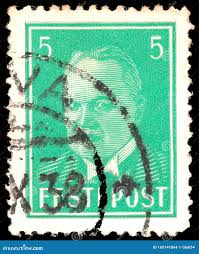 |
| Colnect | Germany, Democratic Republic (DDR) : Stamps [Year: 1974] [1/15] : Colnect 📮 | 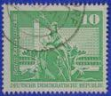 |
| Alamy | A stamp printed in Deutsches Reich shows image of the Georg Gottlieb Pusch was also under the name Jerzy Bogumil Pusz Stock Photo - Alamy | 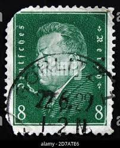 |
| eBay | Used Great Britain Edward VIII Stamps for sale | eBay | 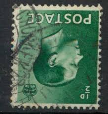 |
| Dreamstime.com | 572 King Carl Gustaf Sweden Stock Photos - Free & Royalty-Free Stock Photos from Dreamstime | 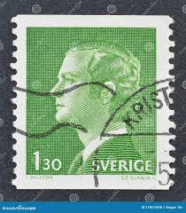 |
| Alamy | Postage stamp from the German Realm in the Presidents of Germany series issued in 1928 Stock Photo - Alamy | 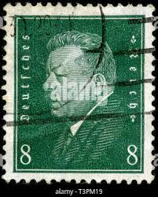 |
| eBay | Deutsche Bundespost Stamp | eBay | 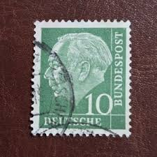 |
| Todocolección | republique française - 0,10 - postes - rama de - Buy Antique stamps of France on todocoleccion | 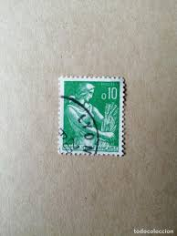 |
| Etsy | Five 5 Doctors Mayo 5c // Vintage Postage Stamps // 5 Cent Stamps // Face Value 0.25 - Etsy | 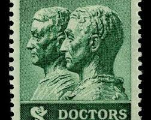 |
| eBay | st3212] FRANCE 1956 Yvert#1069 Scott#B306 imperforated MNH "CHARDIN" | eBay | 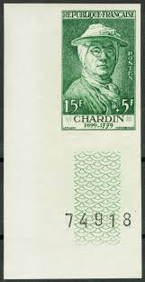 |
| eBay | Deutsche Bundespost 10 for sale | eBay | 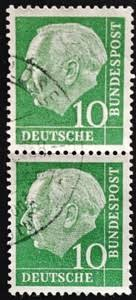 |
| Dreamstime.com | West German 50 Pfennig Stamp Commemorating the 500th Anniversary of the Landshuter Hochzeit 1475 Jousting Knights (1975) Editorial Photo - Image of duel, lance: 425918696 | 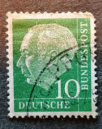 |
| eBay | US stamp, 1938-1939 Presidential Issue 1 cents (KBX) | eBay | 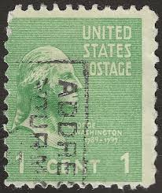 |
| Dreamstime.com | A Stamp Printed in Estonia Shows First President Konstantin Pats, Circa 1936 Editorial Stock Image - Image of palace, circa: 160141864 | 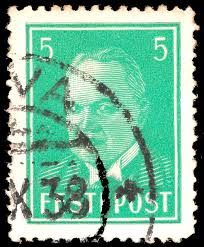 |
| Alamy | Stamp printed in ddr shows hi-res stock photography and images - Alamy | 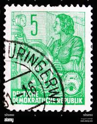 |
| eBay UK | GB 1936 Edward VIII ½d wmk inverted SG 457Wi MNH mint B216 | eBay UK | 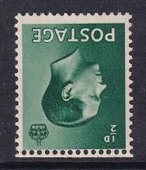 |
| Alamy | GERMANY - CIRCA 1928: A stamp printed in Germany (Deutsches Reich), shows a portrait of the President of the German Reich Paul von Hindenburg, circa 1928 Stock Photo - Alamy |  |
| Mystic Stamp Company | 908 - 1943 1c Four Freedoms - Mystic Stamp Company | 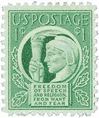 |
| eBay | Republique de Francaise Postes ~ Green 5₵ Stamp ~ Cancelled/Posted - 1951 ~ C111 | eBay |  |
| eBay | NEW GUINEA 1937 KGVI CORONATION 5D MNH ** BLOCK RE-ENTRY VARIETY | eBay | 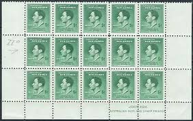 |
| Old-Stamps.com | Theodor Heuss / Deutsche Bundespost 1954 | 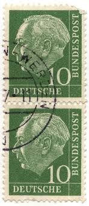 |
| eBay | Van Nuys, California Type 703 Precancel - 1 cent Prexie - U.S. #804 - CA | eBay | 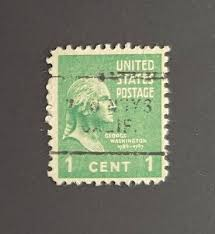 |
| eBay | 1929 Rare Vintage Victor Emmanuel III 25 Cent Collector Stamp Poste Italiane | eBay | 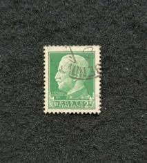 |
| eBay | PB1a ½d Edward VIII Inverted Wmk Booklet pane perf type E UNMOUNTED MINT | eBay | 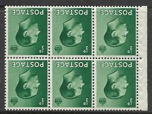 |
| eBay | CANADA Postage ~ King George VI ~ Green ½₵ Stamp ~ Cancel/Posted ~ 1937 ~ Y05 | eBay | 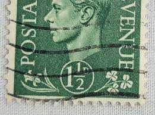 |
| Alamy | 1959 germany hi-res stock photography and images - Alamy | 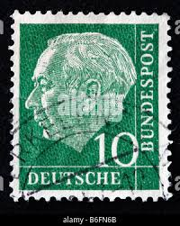 |
| Shutterstock | 2+ Thousand Deutsche Bundespost Royalty-Free Images, Stock Photos & Pictures | Shutterstock | 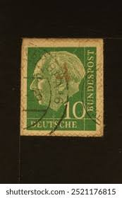 |
| Dreamstime.com | Marianne Type Stock Photos - Free & Royalty-Free Stock Photos from Dreamstime | 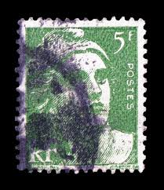 |
| PICRYL | Stamp 1948 DRSBZ MiNr0946a pm B002 - PICRYL - Public Domain Media Search Engine Public Domain Search | 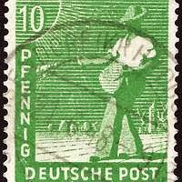 |
| Todocolección | francia marianne en el barco. usado - used. - Buy Antique stamps of France on todocoleccion | 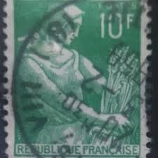 |
| HipStamp | Estonia 1936 Early Issue Fine Used 5s. 191928 | Europe - Ukraine, Stamp / HipStamp | 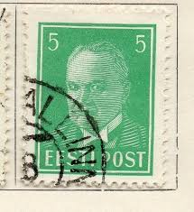 |
| eBay | Frankreich 1949 Michel Nr. 870 U **, Yvert 852 ** cdf ND 25f. vert. Fehlfarbe | eBay | 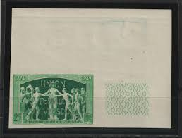 |
| eBay | Royalty 2.5p Denomination British Stamps for sale | eBay | 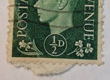 |
| eBay | German Reich 1928 MI 412Y on fragment CANC VF | eBay | 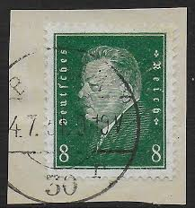 |
| HipStamp | Germany DDR Scott No. 1431 | Europe - Germany & Colonies - Germany DDR, General Issue Stamp / HipStamp | 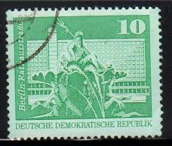 |
| stampsandstuff.net | Stamps from Italy | 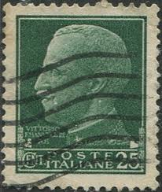 |
| eBay | RAD Gross Deutsches Reich 1944 Cancelled Reich's Labour Service Stamp Card FF738 | eBay | 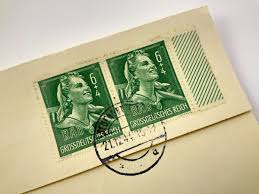 |
| eBay | Germany - 1928 Friedrich Ebert | eBay | 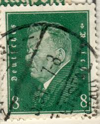 |
| Poppe Stamps | Poppe Stamps: German Federal Republic, 1959, 1220, Numbers - Values And Letters - Characters, Personalities, Numbers - Values And Letters - Characters, Personalities - stamps for sale by theme and country | 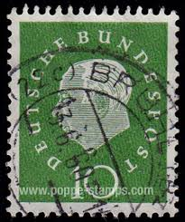 |
| eBay | Syria 1919 | eBay | 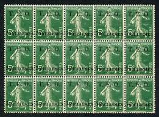 |
| eBay | Germany 1926 Deutsches Reich Fr. v. Schiller Mi# 387 Used (IBX) | eBay | 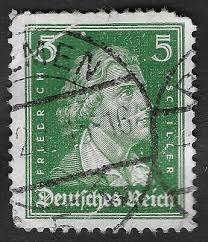 |
| Poppe Stamps | Poppe Stamps: German Federal Republic, 1954, 1109, Presidents - stamps for sale by theme and country | 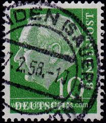 |
| Todocolección | sello - deutsches reich / deutsche bundespost - - Buy Antique stamps of Germany on todocoleccion | 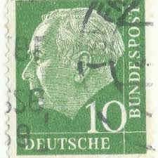 |
| Thanakrit Worapap (ivan9339000) - Profile | Pinterest | 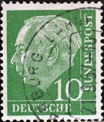 | |
| Stamp Auction Network | H.R. Harmer, Inc. Sale - 3007 Page 21 | 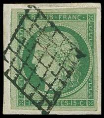 |
| Cherrystone Auctions | Germany, Poland, Garfield Collection of U.S. Postal Stationery - October 28-29, 2009 - GERMANY Deutsches Reich | |
| earsathome.com | KGVI Overprints | |
| eBay | DC ~ Department of State Building ~ Linen Postcard ~ Double Postmarked 1942 | eBay | |
| eBay UK | St Vincent and Grenadines Block Stamps for sale | eBay UK | |
| Shutterstock | Green Letter Head: Over 3,883 Royalty-Free Licensable Stock Photos | Shutterstock | |
| eBay | DDR #B61 used single (SCV=$7.50) | eBay | |
| Alamy | First german postage stamp hi-res stock photography and images - Page 2 - Alamy | |
| eBay | DR 1928 MH25.4Y ** POSTFRISCH besonders SCHÖN ATTEST SCHLEGEL BPP(H5827 | eBay | |
| 123RF | YUGOSLAVIA - CIRCA 1967: Stamp Printed In Yugoslavia Shows A Portrait Of Yugoslavian President Josip Broz Tito, Without Inscription, From Series 75th Birthday Of President Josip Broz Tito Circa 1967 Royalty Free |